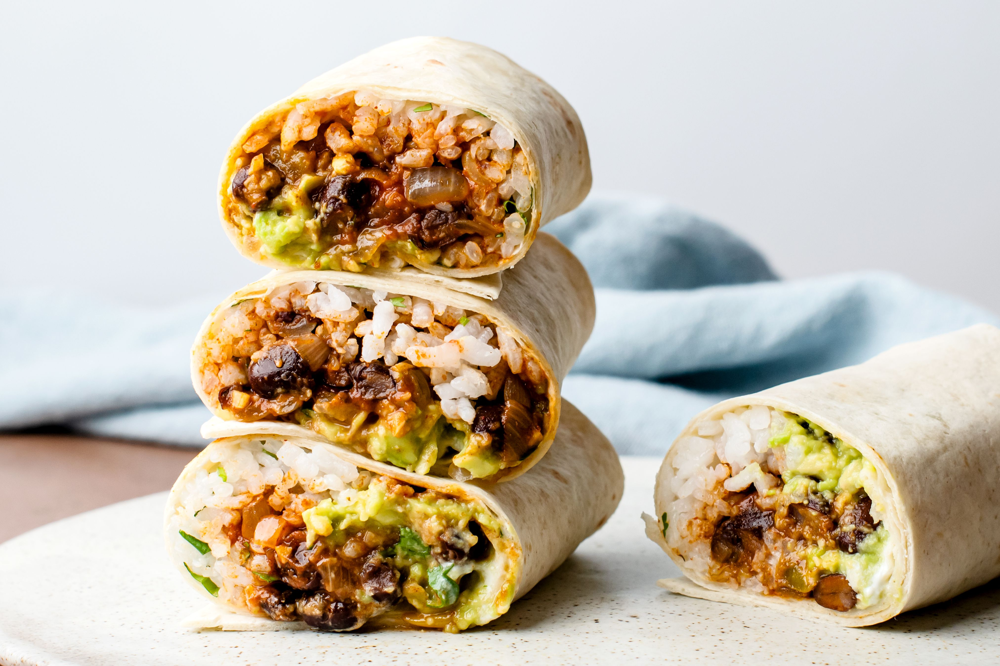

Burritos (AKA Booritos in October)

Description
This is a recipe for vegetarian burritos. It can be modified to include cooked meats as need.
Ingredients
- 2 cups cooked rice
- 2 tablespoons fresh cilantro (chopped)
- limes (juiced)
- 1/2 cup of spinach
- 2-3 chopped tomatoes
- 3 to 4 cloves garlic (minced)
- 1 can of black beans
Steps
- Cut all the vegetables and fruits
- Drain can of beans out in a strainer; rinse thoroughly
- Add beans to sauce pan with 1 cup of water and a dash of salt
- Cook on high heat for 5-7 minutes
- Place tortilla on stove. Flip as needed in 30-40 second increments
- Build out your burrito and enjoy!